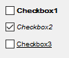

Check Box
A check box is a two-state interactive dialog item. There are two basic kinds of check boxes: simple and button-like. Check boxes are used to enable or disable one or more options from a set. When an option is selected, a check mark appears in the box or the button appears pushed according to the check box subtype.
Check boxes are used when more than one option in a set can be selected at the same time. In contrast, a radio button should be used if one and only one of the options in the set can be selected at any given time.
In DG there is another special kind of check box, the so called push menu control (DG_BT_PUSHMENUICON subtype). The push menu control is a check box combined with a pop-up menu of icon buttons. In addition to the standard button-like check box's behavior, this control has some special functionality. This is why it has a set of handling functions in DG. For details see push menu control and push menu specific functions.
Item type
- DG_ITM_CHECKBOX
Subtypes
-
Subtype Meaning DG_BT_TEXT Simple text check box.

DG_BT_ICON Simple icon check box.

DG_BT_PUSHTEXT Button-like text check box.
DG_BT_PUSHICON Button-like icon check box.

GRC Specification
CheckBox x y dx dy fontSpec "text"
PushCheck x y dx dy fontSpec [frameType] [appearanceType] "text"
IconCheckBox x y dx dy iconID
IconPushCheck x y dx dy iconID [frameType] [appearanceType]
where x and y are the pixel coordinates of the upper left corner of the check box, dx and dy are the width and height of the control in pixels. fontSpec declares the font size and style of the check box text. iconID defines the icon resource ID of an icon-style check box.
Possible values of fontSpec:
-
Value DG constant combination used in DGSetItemFont ExtraSmall DG_IS_EXTRASMALL SmallPlain DG_IS_SMALL | DG_IS_PLAIN SmallBold DG_IS_SMALL | DG_IS_BOLD SmallItalic DG_IS_SMALL | DG_IS_ITALIC SmallUnderline DG_IS_SMALL | DG_IS_UNDERLINE LargePlain DG_IS_LARGE | DG_IS_PLAIN LargeBold DG_IS_LARGE | DG_IS_BOLD LargeItalic DG_IS_LARGE | DG_IS_ITALIC LargeUnderline DG_IS_LARGE | DG_IS_UNDERLINE
Possible values of frameType:
-
Value Meaning noFrame The push check will be frameless. frame The push check will have three-dimensional raised border.
Possible values of the appearanceType: (only affects the push check on Macintosh)
-
Value Meaning Normal This is the default. The push check has normal edge (DG_BA_NORMAL). BevelEdge The push check has bevel edge (DG_BA_BEVEL).
Suggested sizes
For text-style check boxes the following item heights are suggested. It is advised to use these values in GRC or when check boxes are created from program code.
-
Subtype dy (pixels) DG_BT_TEXT 18 DG_BT_PUSHTEXT 20
Messages
-
Message Meaning DG_MSG_CHANGE The checked state of the check box is changed. The message data parameter contains the previous state of the check box. DG_MSG_DOUBLECLICK The check box is double clicked. The message data parameter is always zero. The dialog callback function receives this message for button-like check boxes (DG_BT_PUSHTEXT, DG_BT_PUSHICON) only.
Modification Flag
The DGSetItemValLong function sets the check box's modification flag except if it is called when handling the DG_MSG_INIT message in the dialog callback function. The flag can also be set by user actions that generate DG_MSG_CHANGE messages. Use DGModified or DGResetModified to retrieve or reset (clear) the state of the modification flag.
Remarks
There are two states of a check box: checked (pressed) and unchecked (released). In DG these states are represented by the item values of the check box. Item value of 1 means the checked, while zero the unchecked state. To set and retrieve the state of a check box call DGSetItemValLong and DGGetItemValLong.
The text of a text-style check box (DG_BT_TEXT, DG_BT_PUSHTEXT) can be set, modified and retrieved by DGSetItemText, DGCatItemText and DGGetItemText, respectively. The text can be displayed with any type of DG fonts. The font can be specified not only in GRC, but by the DGSetItemFont function as well. Use DGGetItemFont to retrieve the font currently assigned to a check box.
The icon of an icon-style check box (DG_BT_ICON, DG_BT_PUSHICON) can be assigned either by the resource ID or by the handle of the icon. To set and retrieve the icon of a check box use DGSetItemImageId or DGSetItemImage and DGGetItemImageId or DGGetItemImage, respectively. Note that the icon resource ID can be defined in GRC, too.
Requirements
- Version: DG 2.2.0 or later
- Header: DG.h
See Also
Dialog item types, Push Menu Control, Radio Button
Push menu specific functions, DGCatItemText, DGGetItemFont, DGGetItemImage, DGGetItemImageId, DGGetItemText, DGGetItemValLong, DGModified, DGResetModified, DGSetItemFont, DGSetItemImage, DGSetItemImageId, DGSetItemText, DGSetItemValLong, Callback functions
DG_MSG_CHANGE, DG_MSG_DOUBLECLICK, DG_MSG_INIT